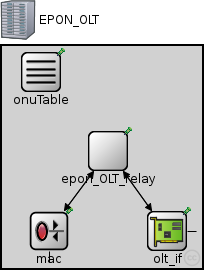
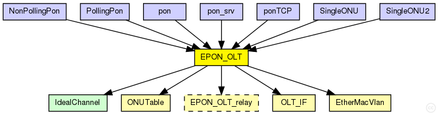

This documentation is released under the Creative Commons license
This documentation is released under the Creative Commons licenseTODO auto-generated module
The following diagram shows usage relationships between types. Unresolved types are missing from the diagram. 
The following diagram shows inheritance relationships for this type. Unresolved types are missing from the diagram.
| NonPollingPon (network) | (no description) |
| PollingPon (network) | (no description) |
| pon (network) | (no description) |
| pon_srv (network) | (no description) |
| ponTCP (network) | (no description) |
| SingleONU (network) | (no description) |
| SingleONU2 (network) | (no description) |
| Name | Type | Default value | Description |
|---|---|---|---|
| relayUnitType | string | "EPON_OLT_relayDefault" |
| Name | Value | Description |
|---|---|---|
| node | ||
| display | i=device/router |
| Name | Direction | Size | Description |
|---|---|---|---|
| ethg | inout | ||
| epon | inout |
| Name | Type | Default value | Description |
|---|---|---|---|
| epon_OLT_relay.addressTableFile | string |
set to empty string if not used |
|
| epon_OLT_relay.addressTableSize | int |
max size of address table |
|
| epon_OLT_relay.agingTime | double |
max idle time for address table entries (when it expires, entry is removed from the table) |
|
| mac.address | string | "auto" |
MAC address as hex string (12 hex digits), or "auto". "auto" values will be replaced by a generated MAC address in init stage 0. |
| mac.txrate | double | 100Mbps |
maximum data rate supported by this station (bit/s); actually chosen speed may be lower due to auto- configuration. 0 means fully auto-configured. |
| mac.duplexEnabled | bool | true |
whether duplex mode can be enabled or not; whether MAC will actually use duplex mode depends on the result of the auto-configuration process (duplex is only possible with DTE-to-DTE connection). |
| mac.txQueueLimit | int | 1000 |
maximum number of frames queued up for transmission; additional frames are dropped. Only used if queueModule=="" |
| mac.queueModule | string | "" |
name of optional external queue module |
| mac.mtu | int | 1500 | |
| olt_if.epon_mac.address | string | "auto" |
MAC address as hex string (12 hex digits), or "auto". "auto" values will be replaced by a generated MAC address in init stage 0. |
| olt_if.epon_mac.txQueueLimit | int | 2 |
maximum number of frames queued up for transmission; additional frames are dropped. Only used if queueModule=="" The 2nd frame is used in case of changing registers with MPCP ... sometimes 1 is already transmitted and the next MPCP decides to transmitt again with the new times. |
| olt_if.epon_mac.queueModule | string | "" |
name of optional external queue module |
| olt_if.epon_mac.mtu | int | 1500 | |
| olt_if.olt_Q_mgmt.slotLength | int | ||
| olt_if.olt_Q_mgmt.slotNumber | int | ||
| olt_if.olt_Q_mgmt.regTimeInt | int | ||
| olt_if.olt_Q_mgmt.regAckTimeOut | int | ||
| olt_if.olt_Q_mgmt.queueLimit | int | ||
| olt_if.olt_Q_mgmt.datarateLimit | int |
Limit the assigned bandwidth to scale down the simulation |
// // TODO auto-generated module // module EPON_OLT { parameters: @node(); @display("i=device/router"); string relayUnitType = default("EPON_OLT_relayDefault"); gates: inout ethg; inout epon; submodules: epon_OLT_relay: <relayUnitType> like EPON_OLT_relay { @display("p=106,105"); } mac: EtherMacVlan { @display("p=47,185"); promiscuous = true; } olt_if: OLT_IF { @display("p=165,185"); } onuTable: ONUTable { @display("p=39,26"); } connections: mac.upperLayerIn <-- epon_OLT_relay.ethOut; mac.upperLayerOut --> epon_OLT_relay.ethIn; mac.phys <--> ethg; epon_OLT_relay.toPONout --> olt_if.netwIn; olt_if.netwOut --> epon_OLT_relay.toPONin; olt_if.phys <--> epon; }
This documentation is released under the Creative Commons license